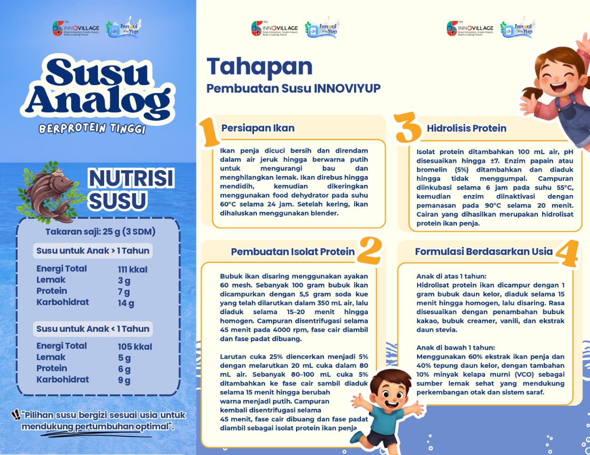

Susu Analog (Berprotein Tinggi)
Susu analog InnoviYup berbasis ikan penja dan daun kelor. Informasi yang ditonjolkan:
takaran saji 25 g (± 3 sdm), perbedaan formulasi berdasarkan usia, serta tahapan pembuatan isolat/hidrolisat protein.
